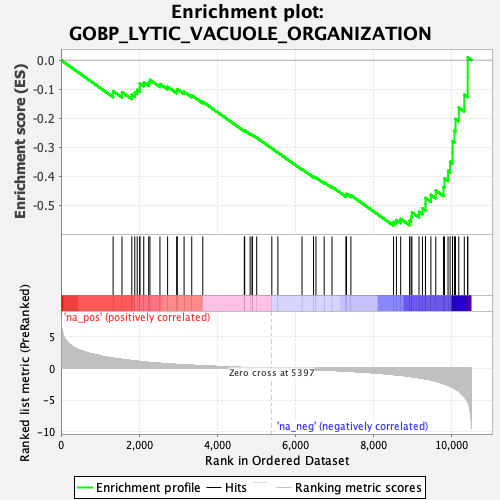
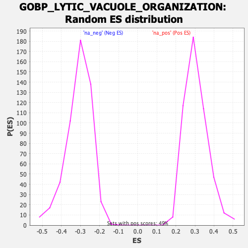

| Dataset | qlf.KOd4vsWTd4_gsea_score |
| Phenotype | NoPhenotypeAvailable |
| Upregulated in class | na_neg |
| GeneSet | GOBP_LYTIC_VACUOLE_ORGANIZATION |
| Enrichment Score (ES) | -0.5700142 |
| Normalized Enrichment Score (NES) | -1.8450745 |
| Nominal p-value | 0.0 |
| FDR q-value | 0.031685516 |
| FWER p-Value | 0.78 |

| SYMBOL | RANK IN GENE LIST | RANK METRIC SCORE | RUNNING ES | CORE ENRICHMENT | |
|---|---|---|---|---|---|
| 1 | TREX1 | 1334 | 1.596 | -0.1069 | No |
| 2 | TFEB | 1561 | 1.401 | -0.1103 | No |
| 3 | CHMP2B | 1812 | 1.213 | -0.1184 | No |
| 4 | ABCA1 | 1889 | 1.160 | -0.1106 | No |
| 5 | CLN8 | 1951 | 1.113 | -0.1020 | No |
| 6 | CCDC115 | 2017 | 1.062 | -0.0944 | No |
| 7 | ARL8B | 2018 | 1.062 | -0.0806 | No |
| 8 | RAB14 | 2118 | 0.997 | -0.0771 | No |
| 9 | GAA | 2245 | 0.927 | -0.0771 | No |
| 10 | TMEM199 | 2277 | 0.909 | -0.0682 | No |
| 11 | LAPTM4B | 2533 | 0.786 | -0.0824 | No |
| 12 | HOOK1 | 2729 | 0.702 | -0.0919 | No |
| 13 | AKTIP | 2961 | 0.609 | -0.1061 | No |
| 14 | VPS35 | 2978 | 0.603 | -0.0998 | No |
| 15 | HOOK3 | 3151 | 0.543 | -0.1092 | No |
| 16 | ACP2 | 3347 | 0.477 | -0.1216 | No |
| 17 | NAGPA | 3630 | 0.388 | -0.1436 | No |
| 18 | CHMP3 | 4692 | 0.126 | -0.2435 | No |
| 19 | HPS4 | 4703 | 0.124 | -0.2428 | No |
| 20 | MTOR | 4841 | 0.099 | -0.2546 | No |
| 21 | CLN3 | 4893 | 0.089 | -0.2583 | No |
| 22 | CLN6 | 4896 | 0.089 | -0.2574 | No |
| 23 | RAB20 | 5010 | 0.068 | -0.2673 | No |
| 24 | MYO7A | 5397 | -0.000 | -0.3042 | No |
| 25 | TMEM165 | 5552 | -0.023 | -0.3187 | No |
| 26 | LAMTOR1 | 6170 | -0.128 | -0.3760 | No |
| 27 | SNAPIN | 6465 | -0.192 | -0.4017 | No |
| 28 | TMEM175 | 6527 | -0.206 | -0.4048 | No |
| 29 | VPS33A | 6737 | -0.258 | -0.4215 | No |
| 30 | SPG11 | 6937 | -0.311 | -0.4365 | No |
| 31 | NAGLU | 7294 | -0.416 | -0.4651 | No |
| 32 | PIKFYVE | 7308 | -0.421 | -0.4609 | No |
| 33 | MFSD8 | 7421 | -0.459 | -0.4656 | No |
| 34 | TPCN2 | 8513 | -0.976 | -0.5573 | Yes |
| 35 | TMEM9 | 8586 | -1.020 | -0.5510 | Yes |
| 36 | MBTPS1 | 8695 | -1.085 | -0.5472 | Yes |
| 37 | BECN1 | 8924 | -1.255 | -0.5527 | Yes |
| 38 | CLN5 | 8962 | -1.285 | -0.5395 | Yes |
| 39 | VPS18 | 8983 | -1.307 | -0.5244 | Yes |
| 40 | HOOK2 | 9165 | -1.475 | -0.5225 | Yes |
| 41 | CORO1A | 9252 | -1.572 | -0.5103 | Yes |
| 42 | LYST | 9329 | -1.649 | -0.4962 | Yes |
| 43 | ZKSCAN3 | 9332 | -1.650 | -0.4749 | Yes |
| 44 | PPT1 | 9469 | -1.829 | -0.4641 | Yes |
| 45 | TMEM106B | 9594 | -2.029 | -0.4496 | Yes |
| 46 | AP3B1 | 9791 | -2.408 | -0.4370 | Yes |
| 47 | GRN | 9817 | -2.460 | -0.4074 | Yes |
| 48 | LAPTM5 | 9908 | -2.634 | -0.3818 | Yes |
| 49 | GBA | 9961 | -2.800 | -0.3504 | Yes |
| 50 | HPS1 | 10021 | -2.951 | -0.3176 | Yes |
| 51 | TPP1 | 10023 | -2.956 | -0.2793 | Yes |
| 52 | ARSB | 10072 | -3.172 | -0.2426 | Yes |
| 53 | ATP6AP2 | 10099 | -3.252 | -0.2028 | Yes |
| 54 | GNPTAB | 10183 | -3.602 | -0.1639 | Yes |
| 55 | SCARB2 | 10324 | -4.466 | -0.1193 | Yes |
| 56 | P2RX7 | 10411 | -5.252 | -0.0592 | Yes |
| 57 | HEXB | 10412 | -5.257 | 0.0092 | Yes |
